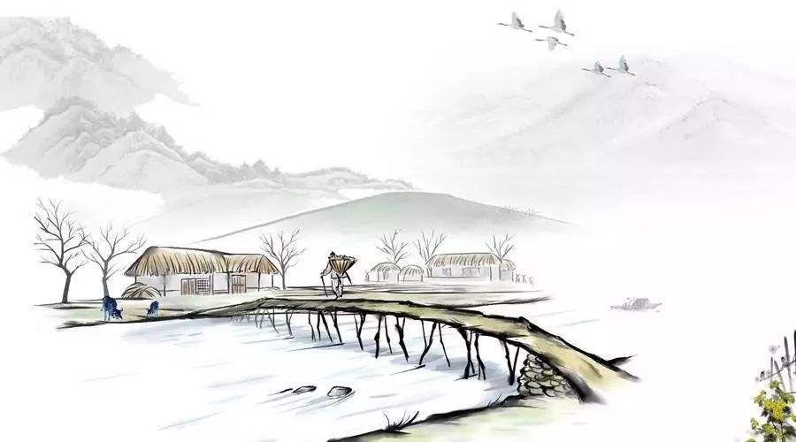

|
|  | 钱塘湖春行 孤山寺北贾亭西，水面初平云脚低。 几处早莺争暖树，谁家新燕啄春泥。 乱花渐欲迷人眼，浅草才能没马蹄。 最爱湖东行不足，绿杨阴里白沙堤。 |
词句注释 ⑴钱塘湖：即杭州西湖。 ⑵孤山寺：南北朝时期陈文帝（522～565）初年建，名承福，宋时改名广华。孤山：在西湖的里、外湖之间，因与其他山不相接连，所以称孤山。上有孤山亭，可俯瞰西湖全景。贾亭：又叫贾公亭。西湖名胜之一，唐朝贾全所筑。唐贞元（唐德宗年号，785～805）中，贾全出任杭州刺史，于钱塘湖建亭。人称“贾亭”或“贾公亭”，该亭至唐代末年。 ⑶水面初平：湖水才同堤岸齐平，即春水初涨。初：在古汉语里用作副词，常用来表示时间，是指不久。云脚低：白云重重叠叠，同湖面上的波澜连成一片，看上去，浮云很低，所以说“云脚低”。点明春游起点和途径之处，着力描绘湖面景色。多见于将雨或雨初停的时候。云脚：接近地面的云气，多见于将雨或雨初停时。“脚”的本义指人和动物行走的器官。这里指低垂的云。 ⑷早莺：初春时早来的黄鹂。莺：黄鹂，鸣声婉转动听。争暖树：争着飞到向阳的树枝上去。暖树：向阳的树。 ⑸新燕：刚从南方飞回来的燕子。啄：衔取。燕子衔泥筑巢。春行仰观所见，莺歌燕舞，生机动人。侧重禽鸟。 ⑹乱花：纷繁的花。渐：副词，渐渐地。欲：副词，将要，就要。迷人眼：使人眼花缭乱。 ⑺浅草：浅浅的青草。才能：刚够上。没（mò）：遮没，盖没。春行俯察所见，花繁草嫩，春意盎然。侧重花草。浅浅的青草刚够没过马蹄。 ⑻湖东：以孤山为参照物，白沙堤（即白堤）在孤山的东北面。行不足：百游不厌。足，满足。 ⑼阴：同“荫”，指树荫。白沙堤：即今白堤，又称沙堤、断桥堤，在西湖东畔，唐朝以前已有。白居易在任杭州刺史时所筑白堤在钱塘门外，是另一条。 |
|
白话译文 行至孤山寺北，贾公亭西，暂且歇脚，举目远眺，但见水面平涨，白云低垂，秀色无边。 几只黄莺，争先飞往向阳树木，谁家燕子，为筑新巢衔来春泥？ 鲜花缤纷，几乎迷人眼神，野草青青，刚刚遮没马蹄。 湖东景色，令人流连忘返，最为可爱的，还是那绿杨掩映的白沙堤。 |
|

唐诗学习网 Copyright© 2018 All Right Reversed
|